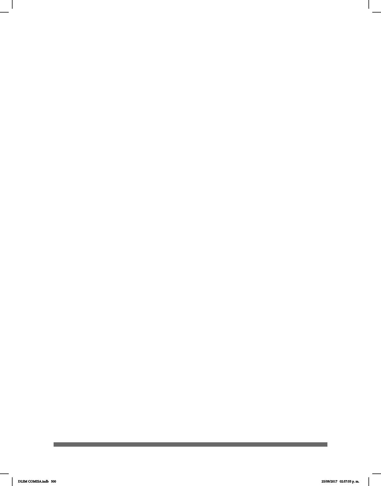

500
Horwitz, B., Amunts, K., Bhattacharyya, R., Patkin, D., Jeries, K., Zilles, K., et al.
(2003). “Activation of Broca’s area during the production of spoken and signed langua-
ge: A combined cytoarchitectonic mapping and PET analysis”. Neuropsychologia, 41,
1868–1876.
Kassubek, J., Hickok, G., & Erhard, P. (2004). “Involvement of classical anterior and
posterior language areas in sign language production, as investigated by 4 T functional
magnetic resonance imaging”. Neuroscience Letters, 364, 168–172.
Klima, E. & Bellugi, U. (1979), “The Signs of Language”. Cambridge, MA: Harvard Uni-
versity Press. p. 53
Lara, L. F. (1996). Teoría del diccionario monolingüe. México: El Colegio de México.
Lenneberg, EH. (1967). Fundamentos biológicos del lenguaje, Alianza. Madrid.
López, Luis Armando, Rosa María Rodríguez Cervantes, María Guadalupe Zamora Mar-
tínez y Susana San Esteban Sosa. (2006). Mis manos que hablan. Lenguaje de señas
para sordos. México: Trillas.
Marchesi, A. (1991). Desarrollo cognoscitivo y lingüístico de los niños sordos. Madrid:
Alianza.
Massone, M.I. (2010). Las comunidades sordas y sus lenguas: desde los márgenes
hacia la visibilización. Cuadernos del INADI No 2. Buenos Aires.
Muñoz, I. M. (2002). “Estructura de la LSE: Querología / Fonología”, Apuntes de
Lingüística de la Lengua de Signos Española. Madrid: Confederación Nacional de
Sordos de España (CNSE). pp. 39-68.
Nasevilla, K. C. (2015). Aportes lingüísticos para la sistematización de la lengua de
señas de Quito. Tesis de licenciatura. Quito: Pontica Universidad Católica del Ecuador.
Orduña, I. y Ruiz, L. G. (2010). “Morfemas clasicadores en la Lengua de Señas
Mexicana”. Signos lingüísticos, 7: (11), pp. 61-84.
Organización de las Naciones Unidas (ONU), (2006). Convención sobre los Derechos
de las Personas con Discapacidad. Recuperado el 13 de diciembre de 2016, de www.
un.org/esa/socdev/enable/documents/tccconvs.pdf
Oviedo, A. (1997). “Diccionarios de lengua de señas: ¿para qué?”. En El Bilingüismo de
los sordos. Vol 1, núm. 3: pp. 53 -58.
DLSM COMISA.indb 500 25/09/2017 02:57:55 p. m.